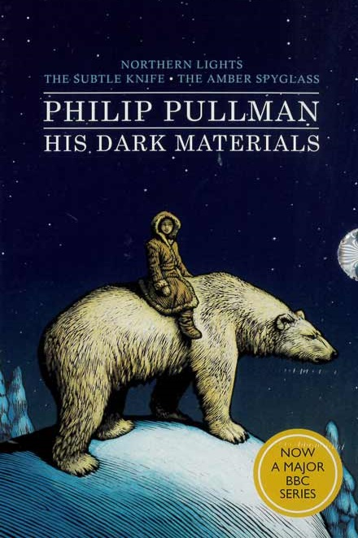
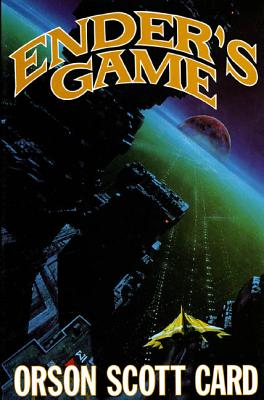
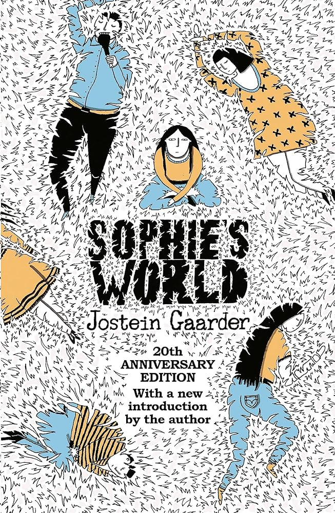
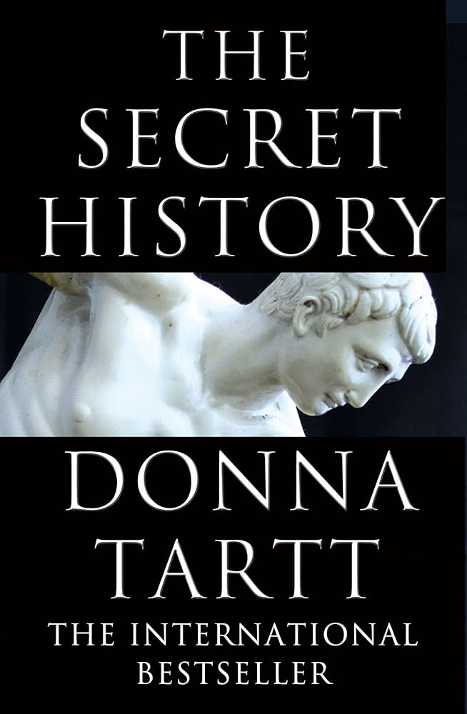
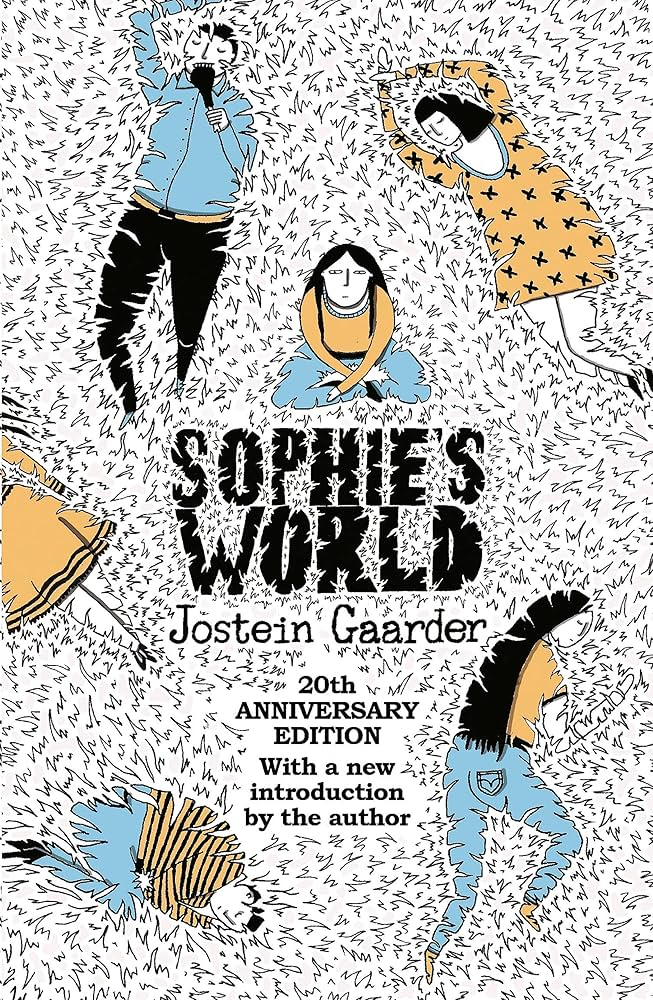
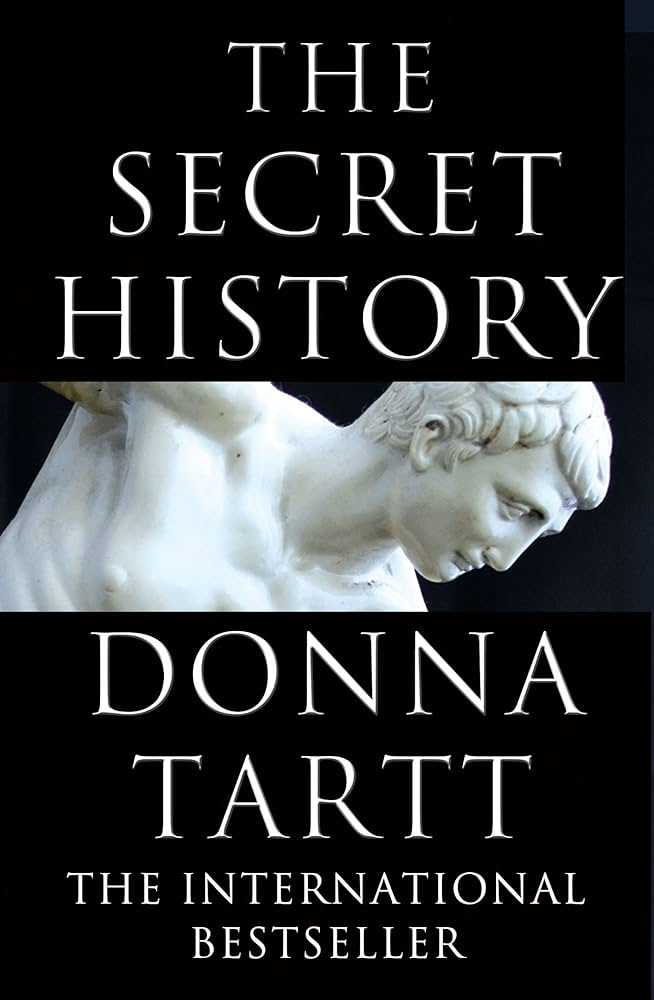
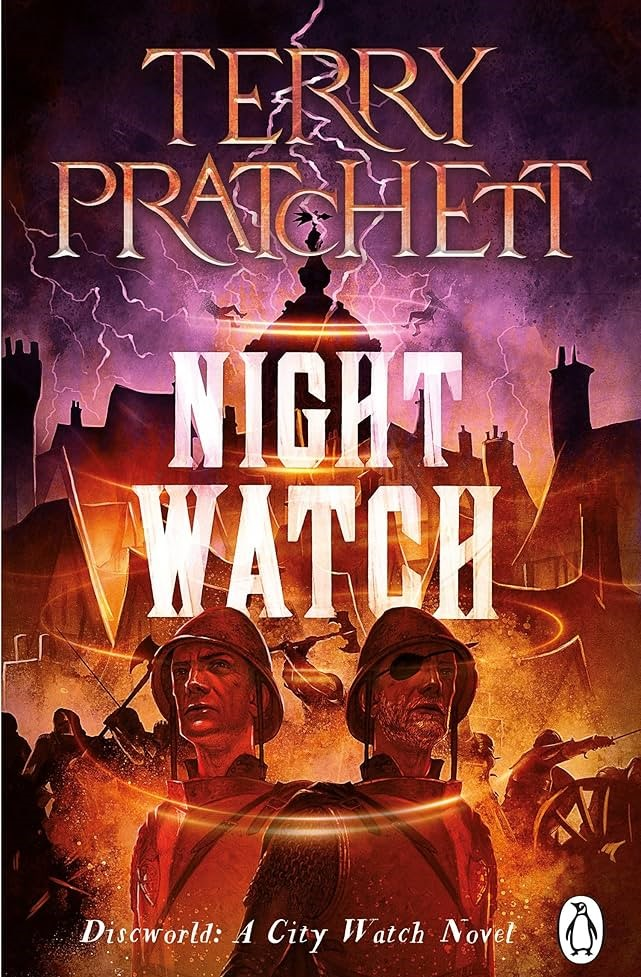
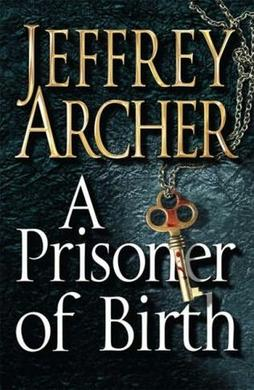
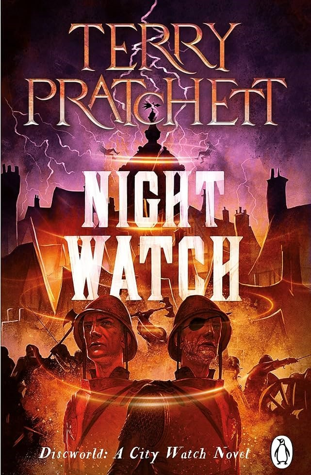
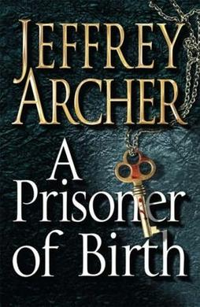

Books



 
 

His Dark Materials (2000)
Phillip PullmanHis Dark Materials is a truly staggering trilogy, incorporating ideas from fantasy, cosmology, folklore and modern science. Though each novel has its own focus, the overaching plot is hard to pin down. There are elements of a coming of age, exploration of worlds both familiar and novel, and a political power struggle on the highest possible plane. In any case, the plot is not so much a focus as the storytelling itself. Pullman does well to create a kind of fairytale mythos within each world explored, as well as all worlds as a whole. Apart of the charm this trilogy provides is in its characters, especially as they develop throughout the novel.
Score: 9.4/10
Enders Game (1985)
Orson Scott CardThe Enders Game Series is a sci-fi epic, not by virtue of its writing, characters or even plot, though each of these are outstanding, but simply through the sheer force of its storytelling. To dig a little deeper, what makes this storytelling so captivating is its mixture: one part world building, one part character building. Importantly, its this character building which differentiates Ender's game from the average sci-fi. The first installment considers the training of children in a war against the human race and aliens, with a focus on politics and war strategy. Later installments follow the ripple effects of the first novel, and become increasingly philosophical as they go along. Though each individual book in the series is strong, together they make for a masterpiece.
Score: 9.2/10
Hitchhikers Guide to the
Galaxy (1979)
Douglas Adams
Hitchhikers Guide to the Galaxy is a subversive sort of sci-fi, so much so that it barely constitutes sci-fi at all. There is no world building, barely any plot, barely even much characterisation; there are simply things happening, and the things which happen are entertaining and hilarious. What makes this series so good is its writing; somehow almost every second line is as quotable as they come. The writing in question concerns a man and some other people, with the question in question being that of life, the universe and everything. The seriousness in which this absurdity is pursued is the underlying great irony which makes every installment of this series shine.
Score: 9.2/10
The Long Goodbye (1953)
Raymond ChandlerThere are two things which make The Long Goodbye the very best the mystery genre has to offer. The first is its prose. Every line of dialogue is sharp as it is smooth. Every description is immaculate as it is effective. And every other word either shows both insight into the characters or progression of the plot. The second is its atmosphere. This is noir at its finest. The world of John Marlowe, private detective, is harsh, bitter and unforgiving. As a result, this makes Marlowe harsh, bitter and unforgiving as well. While most murder mysteries tend to rely on that final reveal, The Long Goodbye makes every step of the procedure just as interesting as the reveal itself. In fact, The Long Goodbye barely even reads like a murder mystery, even though that's fundamentally what it is. My final thoughts? A masterpiece.
Score: 9.0/10
Sophies World (1991)
Jostein GaarderSophie's world is both a guide to the history of philosophy and a complementary meta-fictional narrative. By embedding elaborate and tricky ideas within a lager context, it becomes far more accessible; also, its conversational nature helps as well. In this way, the history of philosophy, including its key figures, eras and ideas are packaged in a highly understandable and graspable format. Prose suffers a little due to translation but this is not a book based primarily on its writing but instead the focus is on the philosophical ideas and how they are presented and explored. And my are they explored. Sophie's world is a true delight.
Score: 8.9/10
The Secret History (1992)
Donna TarttThe Secret History is spectacular, immediately drawing you into its world, a world of a Hampten college, a group of entitled college students and a murder. While the plot keeps you turning the pages, what makes this novel all the more compelling is its writing. The prose on display here is astounding, simultaneously creating uncannily perfect descriptive imagery alongside a slow burning pace which is perpetually demanding what happens next? There are many novels where you have some indication of what will happen next, but here, almost from the very beginning you truly have no earthly idea.
Score: 8.8/10
The Little Nugget (1913)
P. G. WodehouseThe Little Nugget is a jovial and breezy story of a teacher caught in the crossfire of a scheme to kidnap 'the little nugget'. 'The little nugget' in question is a chain-smoking, arrogant bum of a child who makes for one of the most entertaining characters in modern English literature. The prose is easy, the characters and plot light but tight, the situations hilarious to the utmost.
Score: 8.7/10
Night Watch (2002)
Terry PratchettNight Watch is a darkly humorous fantasy thriller, set in the Discworld. The plot follows Commander Sam Vimes, a policeman, and his pursuit of a serial killer after they are thrown back in time to the revolution of Ahkn Morpork (which is more or less just London). Though there are references to other installments, Night Watch works fine as a standalone. What makes this so amazingly worth reading, apart from a decent plot and characters, is the turn of phrase. The sheer volume of aphorisms and witty one-liners would put any modest comedian to shame, while at the same time complementing the ongoing context and pacing. Bravo.
Score: 8.7/10
A Prisoner of Birth (2008)
Jeffery ArcherA Prisoner of Birth is a contemporary interpretation of The Count of Monte Cristo; in other words, a powerful story of revenge complete with Archer's characteristic top-notch storytelling and a compellingly razor sharp plot. Much of Archer's previous work fits into the drama/thriller genre; with this book, he takes the same genre techniques and applies them with much more depth and integrity of. The plot follows a man unfairly sent to prison, who schemes his escape to take revenge on the individuals who put him there. Where 99% of other authors would trip over making this completely unbelievable, the mastery of Archer's crafting of plot is that every element seems completely possible.
Score: 8.6/10